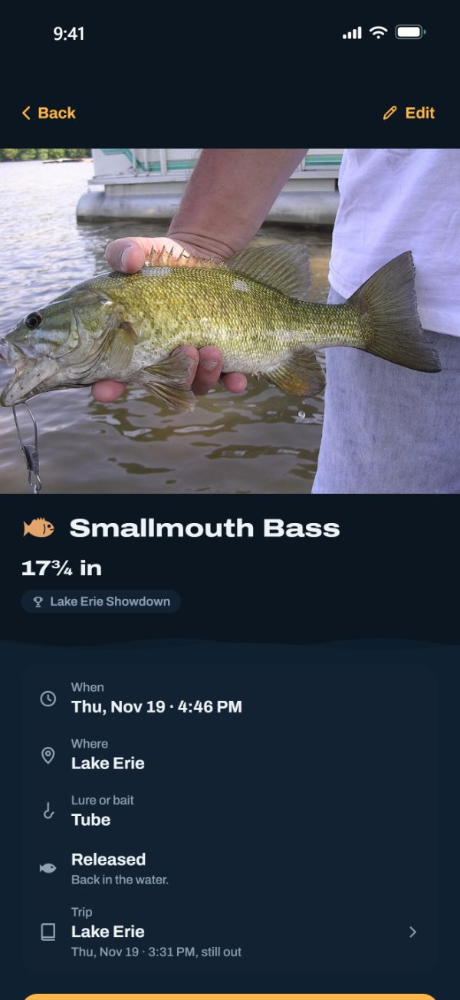
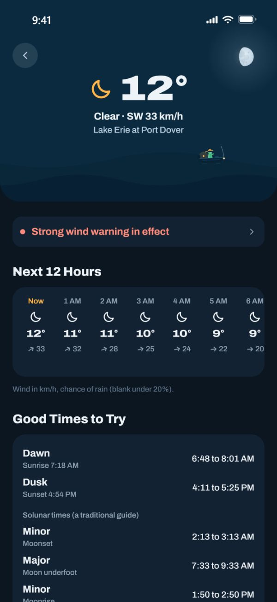
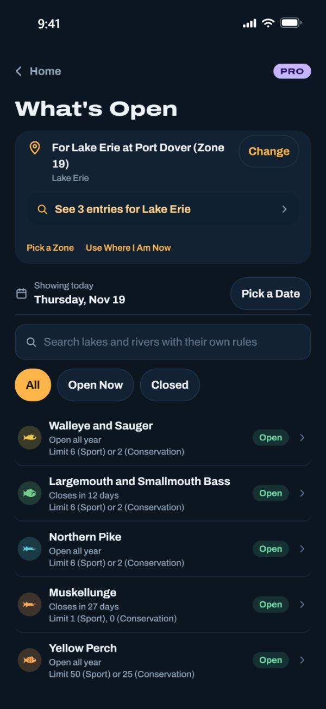

Une appli de pêche faite au Canada : compte tes prises, tiens ton journal de pêche, organise des tournois entre amis et consulte les règles de pêche de l'Ontario.

Gratuit sur iPhone, au Canada.
Ce que ça fait
- Le compteur, d'une toucheTouche un poisson et c'est noté. Tes totaux pour aujourd'hui, ta sortie et l'année.
- Un journal de pêcheTes sorties, tes prises avec photos et notes, et un calendrier de chaque poisson.
- Des tournois entre amisInvite tes amis avec un code, choisis une date de fin et un prix, et suis le classement et le clavardage en direct.
- C'est ouvert?Les règles de pêche de l'Ontario pour ta zone aujourd'hui : ouvert ou fermé, limites et tailles, et les lacs et rivières qui ont leurs propres règles.
- Météo et Ça mord?Vent, pluie, pression et bons moments pour essayer, plus ce qui se prend près de toi, par secteur, jamais par coin.
- XP, séries et badgesMonte de niveau en pêchant, garde ta série quotidienne et gagne des badges.
Tes coins exacts restent privés. Pas de pub, et on ne vend jamais tes données.
Un coup d'œil

Compteur : les poissons d'aujourd'hui, par espèce 
Une prise avec sa photo 
Journal : tes sorties 
Météo pour Lake Erie à Port Dover 
C'est ouvert? pour la zone 19 
Le classement d'un tournoi
AidePolitique de confidentialitéConditions d'utilisationNous joindre